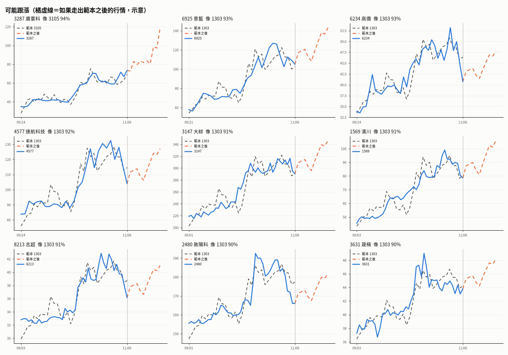
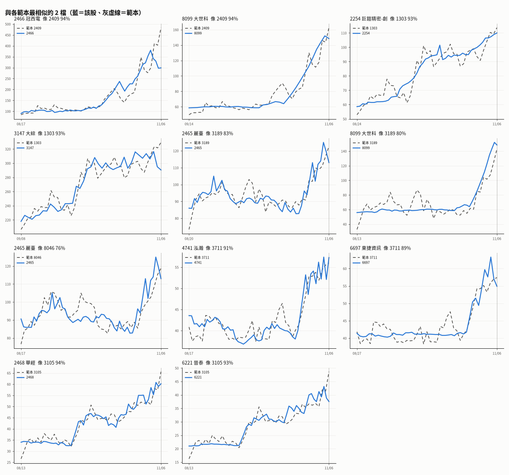

🧭 範本選股 2026-11-06
範本：2409 友達、1303 南亞、3189 景碩、8046 南電、3711 日月光投控、3105 穩懋（08/03～10/02 走勢）｜比對 522 檔｜相似度 70% 以上全部列出
與 2409 友達 相似的有（42 檔）
| # | 代號 | 名稱 | 相似度 | 收盤 | 近10日 | 近2月 | 備註 |
|---|---|---|---|---|---|---|---|
| 1 | 2466 | 冠西電 | 94% | 299 | +20.3% | +187.5% | 法人 +190（5日 -147）、量 0.3倍（近10日 1.2倍） |
| 2 | 8099 | 大世科 | 94% | 148.5 | +110.9% | +156.7% | 法人 +99（5日 +75）、量 0.5倍（近10日 16.0倍） |
| 3 | 4526 | 東台 | 92% | 49.35 | +29.7% | +57.9% | 法人 +819（5日 +3,728）、量 0.5倍（近10日 11.3倍） |
| 4 | 2468 | 華經 | 91% | 60.2 | +20.4% | +79.2% | 法人 -681（5日 +566）、量 2.3倍（近10日 4.0倍） |
| 5 | 2412 | 中華電 | 91% | 163.5 | +6.2% | +18.9% | 法人 +7,152（5日 +25,314）、量 2.3倍（近10日 1.3倍） |
| 6 | 6609 | 瀧澤科 | 90% | 43.1 | +3.6% | +6.3% | 法人 +39（5日 +1,199）、量 2.4倍（近10日 10.6倍） |
| 7 | 6925 | 意藍 | 90% | 105 | -6.7% | +107.5% | 法人 -398（5日 +249）、量 4.7倍（近10日 3.0倍） |
| 8 | 6199 | 天品 | 88% | 163.5 | +10.5% | +71.7% | 法人 -472（5日 -866）、量 2.8倍（近10日 1.7倍） |
| 9 | 6697 | 東捷資訊 | 88% | 54.9 | +31.5% | +33.1% | 法人 +9（5日 +50）、量 3.0倍（近10日 143.9倍） |
| 10 | 4577 | 達航科技 | 88% | 104 | -10.0% | +17.1% | 法人 -192（5日 -309）、量 0.9倍（近10日 2.8倍） |
| 11 | 4741 | 泓瀚 | 88% | 57.3 | +18.4% | +36.1% | 法人 +390（5日 -36）、量 2.7倍（近10日 11.6倍） |
| 12 | 3287 | 廣寰科 | 88% | 73.3 | +4.6% | +94.9% | 法人 +269（5日 +2,202）、量 1.4倍（近10日 1.6倍） |
| 13 | 1569 | 濱川 | 86% | 78.6 | -10.3% | +64.1% | 法人 -51（5日 +332）、量 0.6倍（近10日 3.2倍） |
| 14 | 3147 | 大綜 | 86% | 290.5 | -5.8% | +31.7% | 法人 +225（5日 +45）、量 1.2倍（近10日 1.5倍） |
| 15 | 6221 | 晉泰 | 85% | 37.55 | +13.4% | +73.8% | 法人 +635（5日 +327）、量 1.4倍（近10日 5.7倍） |
| 16 | 9933 | 中鼎 | 85% | 44.4 | +1.6% | +13.2% | 法人 +616（5日 +3,211）、量 1.3倍（近10日 1.6倍） |
| 17 | 3045 | 台灣大 | 84% | 133 | +1.9% | +14.7% | 法人 +1,236（5日 +11,609）、量 1.5倍（近10日 1.3倍） |
| 18 | 6708 | 天擎 | 84% | 68.2 | +6.6% | +81.9% | 法人 +60（5日 +768）、量 1.8倍（近10日 2.8倍） |
| 19 | 4563 | 百德 | 82% | 51.1 | -5.9% | +12.6% | 法人 +114（5日 -27）、量 0.8倍（近10日 4.2倍） |
| 20 | 6782 | 視陽 | 82% | 274.5 | +1.7% | +14.9% | 法人 +260（5日 +368）、量 2.6倍（近10日 1.6倍） |
| 21 | 2254 | 巨鎧精密-創 | 81% | 110 | +15.9% | +77.4% | 法人 +134（5日 -270）、量 1.1倍（近10日 1.2倍） |
| 22 | 7704 | 明遠精密 | 80% | 68.6 | +12.8% | +11.4% | 法人 +187（5日 -71）、量 0.8倍（近10日 67.8倍） |
| 23 | 6957 | 裕慶-KY | 80% | 418.5 | -6.6% | +92.0% | 法人 +43（5日 +188）、量 1.3倍（近10日 1.0倍） |
| 24 | 8213 | 志超 | 80% | 36.15 | -15.6% | +8.2% | 法人 -103（5日 +22）、量 0.6倍（近10日 2.6倍） |
| 25 | 6689 | 伊雲谷 | 80% | 71.5 | -4.4% | +14.8% | 法人 +265（5日 -160）、量 1.7倍（近10日 2.8倍） |
| 26 | 6672 | 騰輝電子-KY | 79% | 463 | -26.2% | +70.2% | 法人 +1,084（5日 -3,886）、量 1.5倍（近10日 1.6倍） |
| 27 | 2465 | 麗臺 | 79% | 113 | +29.1% | +7.6% | 法人 +282（5日 -2,134）、量 1.8倍（近10日 8.4倍） |
| 28 | 6234 | 高僑 | 79% | 40.75 | -19.1% | +15.4% | 法人 +129（5日 -359）、量 0.3倍（近10日 2.2倍） |
| 29 | 3354 | 律勝 | 79% | 35.6 | -35.9% | +36.7% | 法人 +229（5日 -16）、量 0.5倍（近10日 0.6倍） |
| 30 | 3691 | 碩禾 | 78% | 135 | +39.7% | +36.6% | 法人 +102（5日 +211）、量 2.1倍（近10日 4.4倍） |
| 31 | 4903 | 聯光通 | 78% | 46.05 | -11.3% | +21.7% | 法人 +568（5日 +149）、量 0.3倍（近10日 1.1倍） |
| 32 | 1476 | 儒鴻 | 78% | 346.5 | +6.6% | +10.4% | 法人 +558（5日 +1,995）、量 3.5倍（近10日 1.3倍） |
| 33 | 1102 | 亞泥 | 77% | 36.55 | -3.9% | +4.4% | 法人 -240（5日 +11,245）、量 1.2倍（近10日 1.0倍） |
| 34 | 5465 | 富驊 | 77% | 32.55 | -21.7% | +31.2% | 法人 +243（5日 +689）、量 0.5倍（近10日 1.5倍） |
| 35 | 4174 | 浩鼎 | 77% | 48.55 | -9.3% | +94.2% | 法人 +22（5日 -296）、量 1.5倍（近10日 0.6倍） |
| 36 | 6148 | 驊宏資 | 75% | 42.9 | +6.7% | +53.2% | 法人 +709（5日 +844）、量 3.9倍（近10日 4.4倍） |
| 37 | 6456 | GIS-KY | 75% | 80.6 | -18.1% | +15.0% | 法人 -3,455（5日 -6,291）、量 1.5倍（近10日 2.3倍） |
| 38 | 2355 | 敬鵬 | 74% | 47.25 | -9.1% | +7.4% | 法人 +563（5日 -1,177）、量 1.1倍（近10日 1.7倍） |
| 39 | 4566 | 時碩工業 | 73% | 70.9 | -16.7% | +8.1% | 法人 +60（5日 +1,864）、量 0.5倍（近10日 1.8倍） |
| 40 | 4938 | 和碩 | 72% | 92.9 | -11.5% | +1.3% | 法人 +456（5日 +5,249）、量 0.7倍（近10日 0.8倍） |
| 41 | 4770 | 上品 | 71% | 260 | -17.1% | +20.4% | 法人 -15（5日 +114）、量 0.7倍（近10日 1.0倍） |
| 42 | 8042 | 金山電 | 71% | 129 | -13.1% | +17.2% | 法人 -962（5日 +267）、量 1.9倍（近10日 1.8倍） |
與 1303 南亞 相似的有（81 檔）
| # | 代號 | 名稱 | 相似度 | 收盤 | 近10日 | 近2月 | 備註 |
|---|---|---|---|---|---|---|---|
| 1 | 2254 | 巨鎧精密-創 | 93% | 110 | +15.9% | +77.4% | 法人 +134（5日 -270）、量 1.1倍（近10日 1.2倍） |
| 2 | 3147 | 大綜 | 93% | 290.5 | -5.8% | +31.7% | 法人 +225（5日 +45）、量 1.2倍（近10日 1.5倍） |
| 3 | 6199 | 天品 | 92% | 163.5 | +10.5% | +71.7% | 法人 -472（5日 -866）、量 2.8倍（近10日 1.7倍） |
| 4 | 6148 | 驊宏資 | 92% | 42.9 | +6.7% | +53.2% | 法人 +709（5日 +844）、量 3.9倍（近10日 4.4倍） |
| 5 | 6221 | 晉泰 | 91% | 37.55 | +13.4% | +73.8% | 法人 +635（5日 +327）、量 1.4倍（近10日 5.7倍） |
| 6 | 6708 | 天擎 | 91% | 68.2 | +6.6% | +81.9% | 法人 +60（5日 +768）、量 1.8倍（近10日 2.8倍） |
| 7 | 6957 | 裕慶-KY | 91% | 418.5 | -6.6% | +92.0% | 法人 +43（5日 +188）、量 1.3倍（近10日 1.0倍） |
| 8 | 3287 | 廣寰科 | 91% | 73.3 | +4.6% | +94.9% | 法人 +269（5日 +2,202）、量 1.4倍（近10日 1.6倍） |
| 9 | 4770 | 上品 | 91% | 260 | -17.1% | +20.4% | 法人 -15（5日 +114）、量 0.7倍（近10日 1.0倍） |
| 10 | 1569 | 濱川 | 90% | 78.6 | -10.3% | +64.1% | 法人 -51（5日 +332）、量 0.6倍（近10日 3.2倍） |
| 11 | 5465 | 富驊 | 90% | 32.55 | -21.7% | +31.2% | 法人 +243（5日 +689）、量 0.5倍（近10日 1.5倍） |
| 12 | 2466 | 冠西電 | 90% | 299 | +20.3% | +187.5% | 法人 +190（5日 -147）、量 0.3倍（近10日 1.2倍） |
| 13 | 2468 | 華經 | 89% | 60.2 | +20.4% | +79.2% | 法人 -681（5日 +566）、量 2.3倍（近10日 4.0倍） |
| 14 | 1476 | 儒鴻 | 89% | 346.5 | +6.6% | +10.4% | 法人 +558（5日 +1,995）、量 3.5倍（近10日 1.3倍） |
| 15 | 4174 | 浩鼎 | 89% | 48.55 | -9.3% | +94.2% | 法人 +22（5日 -296）、量 1.5倍（近10日 0.6倍） |
| 16 | 2221 | 大甲 | 89% | 143.5 | +7.1% | +72.5% | 法人 -605（5日 +669）、量 3.1倍（近10日 1.5倍） |
| 17 | 4563 | 百德 | 89% | 51.1 | -5.9% | +12.6% | 法人 +114（5日 -27）、量 0.8倍（近10日 4.2倍） |
| 18 | 6672 | 騰輝電子-KY | 88% | 463 | -26.2% | +70.2% | 法人 +1,084（5日 -3,886）、量 1.5倍（近10日 1.6倍） |
| 19 | 4903 | 聯光通 | 87% | 46.05 | -11.3% | +21.7% | 法人 +568（5日 +149）、量 0.3倍（近10日 1.1倍） |
| 20 | 3045 | 台灣大 | 87% | 133 | +1.9% | +14.7% | 法人 +1,236（5日 +11,609）、量 1.5倍（近10日 1.3倍） |
| 21 | 6122 | 擎邦 | 86% | 55.7 | -9.4% | +14.4% | 法人 +58（5日 -637）、量 0.6倍（近10日 0.5倍） |
| 22 | 6925 | 意藍 | 85% | 105 | -6.7% | +107.5% | 法人 -398（5日 +249）、量 4.7倍（近10日 3.0倍） |
| 23 | 8213 | 志超 | 85% | 36.15 | -15.6% | +8.2% | 法人 -103（5日 +22）、量 0.6倍（近10日 2.6倍） |
| 24 | 2412 | 中華電 | 85% | 163.5 | +6.2% | +18.9% | 法人 +7,152（5日 +25,314）、量 2.3倍（近10日 1.3倍） |
| 25 | 2355 | 敬鵬 | 85% | 47.25 | -9.1% | +7.4% | 法人 +563（5日 -1,177）、量 1.1倍（近10日 1.7倍） |
| 26 | 9933 | 中鼎 | 85% | 44.4 | +1.6% | +13.2% | 法人 +616（5日 +3,211）、量 1.3倍（近10日 1.6倍） |
| 27 | 3631 | 晟楠 | 85% | 43.8 | -2.9% | +8.7% | 法人 +24（5日 -4）、量 0.7倍（近10日 0.8倍） |
| 28 | 6456 | GIS-KY | 84% | 80.6 | -18.1% | +15.0% | 法人 -3,455（5日 -6,291）、量 1.5倍（近10日 2.3倍） |
| 29 | 6234 | 高僑 | 83% | 40.75 | -19.1% | +15.4% | 法人 +129（5日 -359）、量 0.3倍（近10日 2.2倍） |
| 30 | 3293 | 鈊象 | 83% | 736 | -5.9% | +4.0% | 法人 +160（5日 +869）、量 1.5倍（近10日 0.7倍） |
| 31 | 3701 | 大眾控 | 83% | 47.6 | -19.3% | +10.1% | 法人 -431（5日 -1,847）、量 0.7倍（近10日 1.3倍） |
| 32 | 1709 | 和益 | 82% | 42.1 | -24.8% | +20.3% | 法人 +1,611（5日 +5,098）、量 0.6倍（近10日 0.6倍） |
| 33 | 3597 | 映興 | 82% | 34.65 | -28.9% | +33.3% | 法人 -86（5日 +603）、量 0.9倍（近10日 2.5倍） |
| 34 | 3605 | 宏致 | 82% | 130 | -27.0% | +2.4% | 法人 +5（5日 -1,713）、量 0.1倍（近10日 0.4倍） |
| 35 | 2305 | 全友 | 81% | 42.25 | -25.0% | +40.6% | 法人 +988（5日 +449）、量 0.4倍（近10日 0.3倍） |
| 36 | 4566 | 時碩工業 | 81% | 70.9 | -16.7% | +8.1% | 法人 +60（5日 +1,864）、量 0.5倍（近10日 1.8倍） |
| 37 | 3441 | 聯一光 | 80% | 145 | -40.0% | +3.9% | 法人 +107（5日 +284）、量 0.1倍（近10日 0.4倍） |
| 38 | 2061 | 風青 | 79% | 58.8 | -4.2% | +5.0% | 法人 +61（5日 -79）、量 0.7倍（近10日 0.8倍） |
| 39 | 6150 | 撼訊 | 79% | 62 | -11.8% | -0.5% | 法人 -87（5日 -42）、量 1.5倍（近10日 2.1倍） |
| 40 | 6505 | 台塑化 | 79% | 85.7 | -21.7% | +8.9% | 法人 +1,209（5日 -4,035）、量 1.0倍（近10日 0.8倍） |
| 41 | 8042 | 金山電 | 79% | 129 | -13.1% | +17.2% | 法人 -962（5日 +267）、量 1.9倍（近10日 1.8倍） |
| 42 | 6742 | 澤米 | 79% | 46.7 | -20.7% | +1.4% | 法人 +152（5日 +247）、量 0.4倍（近10日 0.6倍） |
| 43 | 3443 | 創意 | 79% | 6,205 | -22.4% | +5.3% | 法人 -87（5日 -512）、量 2.1倍（近10日 1.6倍） |
| 44 | 6933 | AMAX-KY | 79% | 321 | -19.3% | -3.0% | 法人 -95（5日 -46）、量 0.8倍（近10日 1.0倍） |
| 45 | 6526 | 達發 | 79% | 624 | -22.6% | -3.4% | 法人 +199（5日 -261）、量 0.9倍（近10日 0.8倍） |
| 46 | 6226 | 光鼎 | 79% | 30.95 | -24.0% | -9.4% | 法人 +1,004（5日 +3,067）、量 0.4倍（近10日 0.4倍） |
| 47 | 4927 | 泰鼎-KY | 79% | 44.85 | -20.3% | +6.0% | 法人 +218（5日 -2,629）、量 0.8倍（近10日 0.9倍） |
| 48 | 4938 | 和碩 | 79% | 92.9 | -11.5% | +1.3% | 法人 +456（5日 +5,249）、量 0.7倍（近10日 0.8倍） |
| 49 | 3114 | 好德 | 79% | 33.4 | -20.4% | +3.2% | 法人 +50（5日 -44）、量 0.3倍（近10日 0.7倍） |
| 50 | 2379 | 瑞昱 | 78% | 708 | -10.6% | -1.5% | 法人 +214（5日 +550）、量 1.4倍（近10日 1.4倍） |
| 51 | 6179 | 亞通 | 77% | 31.7 | -15.8% | +6.6% | 法人 +359（5日 +1,682）、量 0.8倍（近10日 0.8倍） |
| 52 | 1809 | 中釉 | 77% | 38.7 | -18.2% | +0.5% | 法人 +337（5日 -58）、量 0.6倍（近10日 1.4倍） |
| 53 | 6782 | 視陽 | 77% | 274.5 | +1.7% | +14.9% | 法人 +260（5日 +368）、量 2.6倍（近10日 1.6倍） |
| 54 | 6668 | 中揚光 | 77% | 43.75 | -25.3% | -0.6% | 法人 +321（5日 -25）、量 0.2倍（近10日 0.5倍） |
| 55 | 1102 | 亞泥 | 77% | 36.55 | -3.9% | +4.4% | 法人 -240（5日 +11,245）、量 1.2倍（近10日 1.0倍） |
| 56 | 3354 | 律勝 | 76% | 35.6 | -35.9% | +36.7% | 法人 +229（5日 -16）、量 0.5倍（近10日 0.6倍） |
| 57 | 6425 | 易發 | 76% | 60.3 | -20.6% | -7.2% | 法人 +19（5日 +340）、量 0.5倍（近10日 2.4倍） |
| 58 | 8111 | 立碁 | 76% | 68.1 | -17.6% | -10.9% | 法人 -160（5日 -410）、量 0.6倍（近10日 0.4倍） |
| 59 | 6214 | 精誠 | 75% | 192 | -3.5% | +4.9% | 法人 +333（5日 -2,802）、量 2.6倍（近10日 1.5倍） |
| 60 | 5309 | 系統電 | 75% | 52 | -27.4% | -1.0% | 法人 +395（5日 +1,650）、量 0.5倍（近10日 0.6倍） |
| 61 | 8996 | 高力 | 75% | 1,180 | -28.9% | -6.7% | 法人 +114（5日 -396）、量 0.9倍（近10日 1.0倍） |
| 62 | 4556 | 旭然 | 75% | 85.9 | -35.4% | +22.7% | 法人 +58（5日 -26）、量 0.5倍（近10日 0.4倍） |
| 63 | 3219 | 倚強科 | 74% | 93.9 | -14.6% | +3.9% | 法人 -152（5日 -268）、量 1.6倍（近10日 0.5倍） |
| 64 | 6218 | 豪勉 | 74% | 41.7 | -19.3% | -4.2% | 法人 +213（5日 -1,434）、量 0.7倍（近10日 0.6倍） |
| 65 | 8227 | 巨有科技 | 73% | 195 | -31.8% | +21.5% | 法人 -417（5日 +376）、量 1.0倍（近10日 0.6倍） |
| 66 | 4755 | 三福化 | 73% | 117.5 | -6.0% | -0.8% | 法人 -15（5日 +94）、量 1.7倍（近10日 1.9倍） |
| 67 | 1802 | 台玻 | 73% | 57.8 | -14.0% | -4.9% | 法人 +4,436（5日 +17,317）、量 0.6倍（近10日 2.7倍） |
| 68 | 3498 | 陽程 | 73% | 192.5 | -21.1% | -4.5% | 法人 +272（5日 -388）、量 0.8倍（近10日 1.5倍） |
| 69 | 3580 | 友威科 | 73% | 80.8 | -30.3% | -9.2% | 法人 -5（5日 -33）、量 0.4倍（近10日 0.7倍） |
| 70 | 2480 | 敦陽科 | 72% | 166 | -9.5% | +6.1% | 法人 +123（5日 -205）、量 1.4倍（近10日 1.0倍） |
| 71 | 1815 | 富喬 | 72% | 117.5 | -20.1% | -5.5% | 法人 -2,570（5日 -46,550）、量 1.0倍（近10日 1.5倍） |
| 72 | 6155 | 鈞寶 | 72% | 54.4 | -24.1% | -2.9% | 法人 +288（5日 -189）、量 0.4倍（近10日 1.4倍） |
| 73 | 5228 | 鈺鎧 | 72% | 41.9 | -36.0% | +2.8% | 法人 +90（5日 +131）、量 0.3倍（近10日 1.8倍） |
| 74 | 3094 | 聯傑 | 72% | 40.35 | -27.9% | -2.1% | 法人 +379（5日 +288）、量 0.6倍（近10日 0.3倍） |
| 75 | 3029 | 零壹 | 72% | 112.5 | -5.5% | +0.0% | 法人 +1,341（5日 +1,424）、量 2.5倍（近10日 1.3倍） |
| 76 | 3564 | 其陽 | 71% | 48.2 | -27.5% | +0.2% | 法人 +10（5日 +667）、量 0.4倍（近10日 1.2倍） |
| 77 | 4577 | 達航科技 | 71% | 104 | -10.0% | +17.1% | 法人 -192（5日 -309）、量 0.9倍（近10日 2.8倍） |
| 78 | 2241 | 艾姆勒 | 71% | 33.75 | -31.1% | -2.2% | 法人 +254（5日 +648）、量 0.7倍（近10日 0.5倍） |
| 79 | 3624 | 光頡 | 71% | 97 | -35.3% | +9.0% | 法人 +498（5日 +3,188）、量 0.3倍（近10日 0.3倍） |
| 80 | 6620 | 漢達 | 71% | 104.5 | -21.7% | +9.5% | 法人 +61（5日 +492）、量 2.3倍（近10日 0.7倍） |
| 81 | 3311 | 閎暉 | 70% | 34.2 | -25.9% | +5.6% | 法人 +236（5日 +282）、量 0.7倍（近10日 0.7倍） |
與 3189 景碩 相似的有（7 檔）
| # | 代號 | 名稱 | 相似度 | 收盤 | 近10日 | 近2月 | 備註 |
|---|---|---|---|---|---|---|---|
| 1 | 2465 | 麗臺 | 83% | 113 | +29.1% | +7.6% | 法人 +282（5日 -2,134）、量 1.8倍（近10日 8.4倍） |
| 2 | 8099 | 大世科 | 80% | 148.5 | +110.9% | +156.7% | 法人 +99（5日 +75）、量 0.5倍（近10日 16.0倍） |
| 3 | 3379 | 彬台 | 74% | 30.7 | +21.3% | +5.5% | 法人 +37（5日 +21）、量 2.2倍（近10日 44.5倍） |
| 4 | 3691 | 碩禾 | 74% | 135 | +39.7% | +36.6% | 法人 +102（5日 +211）、量 2.1倍（近10日 4.4倍） |
| 5 | 6697 | 東捷資訊 | 73% | 54.9 | +31.5% | +33.1% | 法人 +9（5日 +50）、量 3.0倍（近10日 143.9倍） |
| 6 | 6609 | 瀧澤科 | 72% | 43.1 | +3.6% | +6.3% | 法人 +39（5日 +1,199）、量 2.4倍（近10日 10.6倍） |
| 7 | 4526 | 東台 | 71% | 49.35 | +29.7% | +57.9% | 法人 +819（5日 +3,728）、量 0.5倍（近10日 11.3倍） |
與 8046 南電 相似的有（1 檔）
| # | 代號 | 名稱 | 相似度 | 收盤 | 近10日 | 近2月 | 備註 |
|---|---|---|---|---|---|---|---|
| 1 | 2465 | 麗臺 | 76% | 113 | +29.1% | +7.6% | 法人 +282（5日 -2,134）、量 1.8倍（近10日 8.4倍） |
與 3711 日月光投控 相似的有（18 檔）
| # | 代號 | 名稱 | 相似度 | 收盤 | 近10日 | 近2月 | 備註 |
|---|---|---|---|---|---|---|---|
| 1 | 4741 | 泓瀚 | 91% | 57.3 | +18.4% | +36.1% | 法人 +390（5日 -36）、量 2.7倍（近10日 11.6倍） |
| 2 | 6697 | 東捷資訊 | 89% | 54.9 | +31.5% | +33.1% | 法人 +9（5日 +50）、量 3.0倍（近10日 143.9倍） |
| 3 | 7704 | 明遠精密 | 85% | 68.6 | +12.8% | +11.4% | 法人 +187（5日 -71）、量 0.8倍（近10日 67.8倍） |
| 4 | 6609 | 瀧澤科 | 85% | 43.1 | +3.6% | +6.3% | 法人 +39（5日 +1,199）、量 2.4倍（近10日 10.6倍） |
| 5 | 4577 | 達航科技 | 83% | 104 | -10.0% | +17.1% | 法人 -192（5日 -309）、量 0.9倍（近10日 2.8倍） |
| 6 | 3691 | 碩禾 | 82% | 135 | +39.7% | +36.6% | 法人 +102（5日 +211）、量 2.1倍（近10日 4.4倍） |
| 7 | 2465 | 麗臺 | 81% | 113 | +29.1% | +7.6% | 法人 +282（5日 -2,134）、量 1.8倍（近10日 8.4倍） |
| 8 | 2468 | 華經 | 80% | 60.2 | +20.4% | +79.2% | 法人 -681（5日 +566）、量 2.3倍（近10日 4.0倍） |
| 9 | 2412 | 中華電 | 80% | 163.5 | +6.2% | +18.9% | 法人 +7,152（5日 +25,314）、量 2.3倍（近10日 1.3倍） |
| 10 | 9933 | 中鼎 | 80% | 44.4 | +1.6% | +13.2% | 法人 +616（5日 +3,211）、量 1.3倍（近10日 1.6倍） |
| 11 | 3045 | 台灣大 | 77% | 133 | +1.9% | +14.7% | 法人 +1,236（5日 +11,609）、量 1.5倍（近10日 1.3倍） |
| 12 | 3379 | 彬台 | 75% | 30.7 | +21.3% | +5.5% | 法人 +37（5日 +21）、量 2.2倍（近10日 44.5倍） |
| 13 | 6689 | 伊雲谷 | 73% | 71.5 | -4.4% | +14.8% | 法人 +265（5日 -160）、量 1.7倍（近10日 2.8倍） |
| 14 | 4904 | 遠傳 | 73% | 112 | +0.0% | +9.3% | 法人 +1,223（5日 +9,064）、量 1.6倍（近10日 1.4倍） |
| 15 | 1786 | 科妍 | 72% | 47.05 | +18.1% | +2.0% | 法人 -218（5日 -751）、量 12.9倍（近10日 8.7倍） |
| 16 | 6199 | 天品 | 71% | 163.5 | +10.5% | +71.7% | 法人 -472（5日 -866）、量 2.8倍（近10日 1.7倍） |
| 17 | 3147 | 大綜 | 71% | 290.5 | -5.8% | +31.7% | 法人 +225（5日 +45）、量 1.2倍（近10日 1.5倍） |
| 18 | 8213 | 志超 | 70% | 36.15 | -15.6% | +8.2% | 法人 -103（5日 +22）、量 0.6倍（近10日 2.6倍） |
與 3105 穩懋 相似的有（52 檔）
| # | 代號 | 名稱 | 相似度 | 收盤 | 近10日 | 近2月 | 備註 |
|---|---|---|---|---|---|---|---|
| 1 | 2468 | 華經 | 94% | 60.2 | +20.4% | +79.2% | 法人 -681（5日 +566）、量 2.3倍（近10日 4.0倍） |
| 2 | 6221 | 晉泰 | 93% | 37.55 | +13.4% | +73.8% | 法人 +635（5日 +327）、量 1.4倍（近10日 5.7倍） |
| 3 | 6199 | 天品 | 93% | 163.5 | +10.5% | +71.7% | 法人 -472（5日 -866）、量 2.8倍（近10日 1.7倍） |
| 4 | 2254 | 巨鎧精密-創 | 92% | 110 | +15.9% | +77.4% | 法人 +134（5日 -270）、量 1.1倍（近10日 1.2倍） |
| 5 | 2466 | 冠西電 | 91% | 299 | +20.3% | +187.5% | 法人 +190（5日 -147）、量 0.3倍（近10日 1.2倍） |
| 6 | 3045 | 台灣大 | 91% | 133 | +1.9% | +14.7% | 法人 +1,236（5日 +11,609）、量 1.5倍（近10日 1.3倍） |
| 7 | 6148 | 驊宏資 | 91% | 42.9 | +6.7% | +53.2% | 法人 +709（5日 +844）、量 3.9倍（近10日 4.4倍） |
| 8 | 1569 | 濱川 | 90% | 78.6 | -10.3% | +64.1% | 法人 -51（5日 +332）、量 0.6倍（近10日 3.2倍） |
| 9 | 3147 | 大綜 | 89% | 290.5 | -5.8% | +31.7% | 法人 +225（5日 +45）、量 1.2倍（近10日 1.5倍） |
| 10 | 6708 | 天擎 | 89% | 68.2 | +6.6% | +81.9% | 法人 +60（5日 +768）、量 1.8倍（近10日 2.8倍） |
| 11 | 3287 | 廣寰科 | 89% | 73.3 | +4.6% | +94.9% | 法人 +269（5日 +2,202）、量 1.4倍（近10日 1.6倍） |
| 12 | 6925 | 意藍 | 88% | 105 | -6.7% | +107.5% | 法人 -398（5日 +249）、量 4.7倍（近10日 3.0倍） |
| 13 | 1476 | 儒鴻 | 88% | 346.5 | +6.6% | +10.4% | 法人 +558（5日 +1,995）、量 3.5倍（近10日 1.3倍） |
| 14 | 4563 | 百德 | 88% | 51.1 | -5.9% | +12.6% | 法人 +114（5日 -27）、量 0.8倍（近10日 4.2倍） |
| 15 | 5465 | 富驊 | 87% | 32.55 | -21.7% | +31.2% | 法人 +243（5日 +689）、量 0.5倍（近10日 1.5倍） |
| 16 | 4770 | 上品 | 86% | 260 | -17.1% | +20.4% | 法人 -15（5日 +114）、量 0.7倍（近10日 1.0倍） |
| 17 | 6957 | 裕慶-KY | 86% | 418.5 | -6.6% | +92.0% | 法人 +43（5日 +188）、量 1.3倍（近10日 1.0倍） |
| 18 | 4903 | 聯光通 | 84% | 46.05 | -11.3% | +21.7% | 法人 +568（5日 +149）、量 0.3倍（近10日 1.1倍） |
| 19 | 6672 | 騰輝電子-KY | 83% | 463 | -26.2% | +70.2% | 法人 +1,084（5日 -3,886）、量 1.5倍（近10日 1.6倍） |
| 20 | 4174 | 浩鼎 | 82% | 48.55 | -9.3% | +94.2% | 法人 +22（5日 -296）、量 1.5倍（近10日 0.6倍） |
| 21 | 6456 | GIS-KY | 81% | 80.6 | -18.1% | +15.0% | 法人 -3,455（5日 -6,291）、量 1.5倍（近10日 2.3倍） |
| 22 | 6234 | 高僑 | 81% | 40.75 | -19.1% | +15.4% | 法人 +129（5日 -359）、量 0.3倍（近10日 2.2倍） |
| 23 | 3354 | 律勝 | 81% | 35.6 | -35.9% | +36.7% | 法人 +229（5日 -16）、量 0.5倍（近10日 0.6倍） |
| 24 | 4566 | 時碩工業 | 80% | 70.9 | -16.7% | +8.1% | 法人 +60（5日 +1,864）、量 0.5倍（近10日 1.8倍） |
| 25 | 8099 | 大世科 | 80% | 148.5 | +110.9% | +156.7% | 法人 +99（5日 +75）、量 0.5倍（近10日 16.0倍） |
| 26 | 6782 | 視陽 | 79% | 274.5 | +1.7% | +14.9% | 法人 +260（5日 +368）、量 2.6倍（近10日 1.6倍） |
| 27 | 4741 | 泓瀚 | 79% | 57.3 | +18.4% | +36.1% | 法人 +390（5日 -36）、量 2.7倍（近10日 11.6倍） |
| 28 | 4526 | 東台 | 79% | 49.35 | +29.7% | +57.9% | 法人 +819（5日 +3,728）、量 0.5倍（近10日 11.3倍） |
| 29 | 8213 | 志超 | 78% | 36.15 | -15.6% | +8.2% | 法人 -103（5日 +22）、量 0.6倍（近10日 2.6倍） |
| 30 | 2221 | 大甲 | 78% | 143.5 | +7.1% | +72.5% | 法人 -605（5日 +669）、量 3.1倍（近10日 1.5倍） |
| 31 | 2355 | 敬鵬 | 78% | 47.25 | -9.1% | +7.4% | 法人 +563（5日 -1,177）、量 1.1倍（近10日 1.7倍） |
| 32 | 4577 | 達航科技 | 78% | 104 | -10.0% | +17.1% | 法人 -192（5日 -309）、量 0.9倍（近10日 2.8倍） |
| 33 | 6689 | 伊雲谷 | 77% | 71.5 | -4.4% | +14.8% | 法人 +265（5日 -160）、量 1.7倍（近10日 2.8倍） |
| 34 | 3631 | 晟楠 | 77% | 43.8 | -2.9% | +8.7% | 法人 +24（5日 -4）、量 0.7倍（近10日 0.8倍） |
| 35 | 6609 | 瀧澤科 | 76% | 43.1 | +3.6% | +6.3% | 法人 +39（5日 +1,199）、量 2.4倍（近10日 10.6倍） |
| 36 | 3691 | 碩禾 | 76% | 135 | +39.7% | +36.6% | 法人 +102（5日 +211）、量 2.1倍（近10日 4.4倍） |
| 37 | 6214 | 精誠 | 75% | 192 | -3.5% | +4.9% | 法人 +333（5日 -2,802）、量 2.6倍（近10日 1.5倍） |
| 38 | 6122 | 擎邦 | 75% | 55.7 | -9.4% | +14.4% | 法人 +58（5日 -637）、量 0.6倍（近10日 0.5倍） |
| 39 | 1709 | 和益 | 74% | 42.1 | -24.8% | +20.3% | 法人 +1,611（5日 +5,098）、量 0.6倍（近10日 0.6倍） |
| 40 | 1809 | 中釉 | 74% | 38.7 | -18.2% | +0.5% | 法人 +337（5日 -58）、量 0.6倍（近10日 1.4倍） |
| 41 | 3114 | 好德 | 73% | 33.4 | -20.4% | +3.2% | 法人 +50（5日 -44）、量 0.3倍（近10日 0.7倍） |
| 42 | 2061 | 風青 | 73% | 58.8 | -4.2% | +5.0% | 法人 +61（5日 -79）、量 0.7倍（近10日 0.8倍） |
| 43 | 6697 | 東捷資訊 | 72% | 54.9 | +31.5% | +33.1% | 法人 +9（5日 +50）、量 3.0倍（近10日 143.9倍） |
| 44 | 8042 | 金山電 | 72% | 129 | -13.1% | +17.2% | 法人 -962（5日 +267）、量 1.9倍（近10日 1.8倍） |
| 45 | 4927 | 泰鼎-KY | 71% | 44.85 | -20.3% | +6.0% | 法人 +218（5日 -2,629）、量 0.8倍（近10日 0.9倍） |
| 46 | 3597 | 映興 | 71% | 34.65 | -28.9% | +33.3% | 法人 -86（5日 +603）、量 0.9倍（近10日 2.5倍） |
| 47 | 6742 | 澤米 | 71% | 46.7 | -20.7% | +1.4% | 法人 +152（5日 +247）、量 0.4倍（近10日 0.6倍） |
| 48 | 3701 | 大眾控 | 71% | 47.6 | -19.3% | +10.1% | 法人 -431（5日 -1,847）、量 0.7倍（近10日 1.3倍） |
| 49 | 6668 | 中揚光 | 71% | 43.75 | -25.3% | -0.6% | 法人 +321（5日 -25）、量 0.2倍（近10日 0.5倍） |
| 50 | 3498 | 陽程 | 71% | 192.5 | -21.1% | -4.5% | 法人 +272（5日 -388）、量 0.8倍（近10日 1.5倍） |
| 51 | 3605 | 宏致 | 71% | 130 | -27.0% | +2.4% | 法人 +5（5日 -1,713）、量 0.1倍（近10日 0.4倍） |
| 52 | 2305 | 全友 | 70% | 42.25 | -25.0% | +40.6% | 法人 +988（5日 +449）、量 0.4倍（近10日 0.3倍） |
🚀 可能跟漲（像範本噴出前 85% 以上、近10日還沒大漲）
| # | 代號 | 名稱 | 像哪個範本 | 相似度 | 收盤 | 近10日 | 近2月 | 備註 |
|---|---|---|---|---|---|---|---|---|
| 1 | 3287 | 廣寰科 | 3105 | 94% | 73.3 | +4.6% | +94.9% | 法人 +269（5日 +2,202）、量 1.4倍（近10日 1.6倍） |
| 2 | 6925 | 意藍 | 1303 | 93% | 105 | -6.7% | +107.5% | 法人 -398（5日 +249）、量 4.7倍（近10日 3.0倍） |
| 3 | 6234 | 高僑 | 1303 | 93% | 40.75 | -19.1% | +15.4% | 法人 +129（5日 -359）、量 0.3倍（近10日 2.2倍） |
| 4 | 4577 | 達航科技 | 1303 | 92% | 104 | -10.0% | +17.1% | 法人 -192（5日 -309）、量 0.9倍（近10日 2.8倍） |
| 5 | 3147 | 大綜 | 1303 | 91% | 290.5 | -5.8% | +31.7% | 法人 +225（5日 +45）、量 1.2倍（近10日 1.5倍） |
| 6 | 1569 | 濱川 | 1303 | 91% | 78.6 | -10.3% | +64.1% | 法人 -51（5日 +332）、量 0.6倍（近10日 3.2倍） |
| 7 | 8213 | 志超 | 1303 | 91% | 36.15 | -15.6% | +8.2% | 法人 -103（5日 +22）、量 0.6倍（近10日 2.6倍） |
| 8 | 2480 | 敦陽科 | 1303 | 90% | 166 | -9.5% | +6.1% | 法人 +123（5日 -205）、量 1.4倍（近10日 1.0倍） |
| 9 | 3631 | 晟楠 | 1303 | 90% | 43.8 | -2.9% | +8.7% | 法人 +24（5日 -4）、量 0.7倍（近10日 0.8倍） |
| 10 | 6782 | 視陽 | 3105 | 90% | 274.5 | +1.7% | +14.9% | 法人 +260（5日 +368）、量 2.6倍（近10日 1.6倍） |
| 11 | 3354 | 律勝 | 1303 | 89% | 35.6 | -35.9% | +36.7% | 法人 +229（5日 -16）、量 0.5倍（近10日 0.6倍） |
| 12 | 6672 | 騰輝電子-KY | 1303 | 89% | 463 | -26.2% | +70.2% | 法人 +1,084（5日 -3,886）、量 1.5倍（近10日 1.6倍） |
| 13 | 3045 | 台灣大 | 2409 | 89% | 133 | +1.9% | +14.7% | 法人 +1,236（5日 +11,609）、量 1.5倍（近10日 1.3倍） |
| 14 | 2355 | 敬鵬 | 1303 | 89% | 47.25 | -9.1% | +7.4% | 法人 +563（5日 -1,177）、量 1.1倍（近10日 1.7倍） |
| 15 | 6689 | 伊雲谷 | 1303 | 89% | 71.5 | -4.4% | +14.8% | 法人 +265（5日 -160）、量 1.7倍（近10日 2.8倍） |
📏 歷史驗證（之後 10 天）
| 範本 | 案例數 | 平均 | 上漲機率 | 漲超過10% | 全市場平均 | 全市場上漲 | 全市場漲超過10% |
|---|---|---|---|---|---|---|---|
| 2409 友達 | 1287 | +5.0% | 57% | 27% | +2.4% | 52% | 19% |
| 1303 南亞 | 1808 | +4.9% | 55% | 27% | +2.4% | 52% | 19% |
| 3189 景碩 | 2 | +13.3% | 50% | 50% | +2.4% | 52% | 19% |
| 8046 南電 | 44 | +0.6% | 52% | 11% | +2.4% | 52% | 19% |
| 3711 日月光投控 | 0 | — | — | — | — | — | — |
| 3105 穩懋 | 1589 | +3.3% | 52% | 25% | +2.4% | 52% | 19% |

